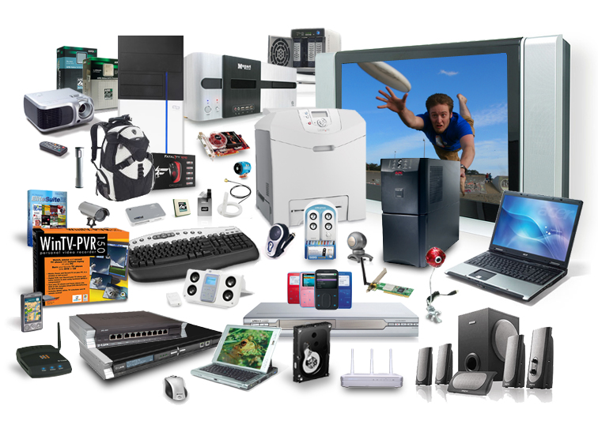

1⃣️ Hardware and Software
Hardware
Definetion: Any physical parts of a computer and related devices are hardware.
Two kinds of hardware

Internal: motherboards, hard drives, RAM.
External: Keyboard, mouse, printer.
Explain the relationship between hardware and software?
-- The most powerful computer made up of the most state of the art hardware is useless it has software to run on it. Likewise, the most useful and intuitive software is equally as useless it has hardware to run on. At the most fundamental of levels the combination of hardware and software is what makes a computer system.
VS
Software

Definetion: Computer programs in all these forms (non - physical).
Two kinds of software
System: Making your computer work and keeping it safe for example Operating System(OS) and Utilites Programs.

Application: Everything else like Games, E-mail, Browsers.
2⃣️ Input Output and Storage Devices
Input Devices
Input Device is the device which allows you get information from the outsied world to the computer system.
Output Devices
Output Device are the device which is able to take data from the digital storage and chage it to another format that human can process.
Storage Devices
Storage Device can be internal or external storage to a computer.
3⃣️ Types of Storage Devices - Secondary Storage Devices
Magnetic storages
Magnetic storage(MS) is the storage of data ion a magnetized medium.
- Data recorded onto magnetic disks.
- Mechanical parts move over disks surface to read and write data.
- +Cheapest, +Large
- -Slow, -Fragile
Optical storages
Optical storages(OS) is the storage of data on an optically readable medium.
- Data recorded onto optical disks.
- Lasers read and write data. Highly portable.
- +Cheap, +Light
- -Resilient, -Limited
Solid state storages
Solid state storage(SSD) is a type of non-volatile computer storage that stores and retrieves information using electronic circuits.
- Data recorded onto solid state memory chips.
- Very durable and fast, no mechanical moving parts needed.
- +Durable, +Faster
- -Cost, -Limited
4⃣️ Types of Memory - RAM and ROM - Primary Storage Devices
RAM
RAM is Random Access Memory. The fast temporary type of main memory it used to store data and programs -– OS, Programs, Data.
VS
ROM
ROM is Read Only Memory. A type of memory which cannot be changed by a program or the user.
5⃣️ Virtual Storages
Virtual Storage is often referred to as cloud storage. This type of storage is based around the concept of storaging the data over the internet in the cloud instead of some local storage device.
- Cloud storage
- Storing data over the internet
Advantages
- Data can assess to anytime, anywhere with internet.
- Date can share to other devices.
- Easy to collaborate on the documents.
Disadvantages
- Can be slow due to slow internet.
- Can be quite expensive.
6⃣️ The BBC Micro:bit
The Micro Bit (also referred to as BBC Micro Bit, stylized as micro:bit) is an open source hardware ARM-based embedded system designed by the BBC for use in computer education in the UK.